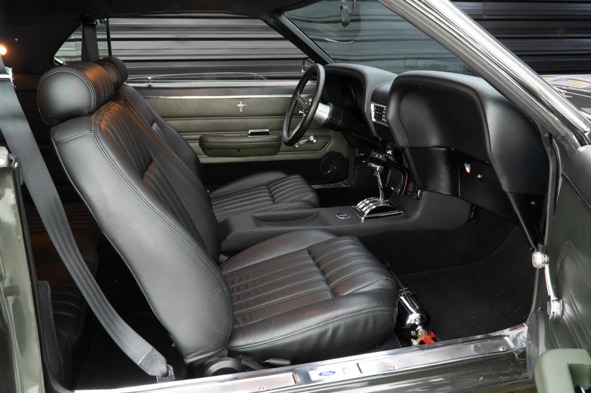
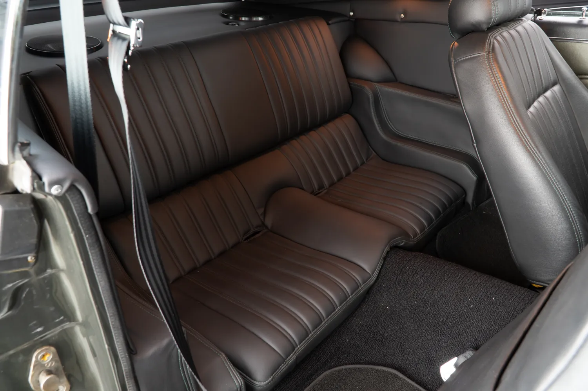
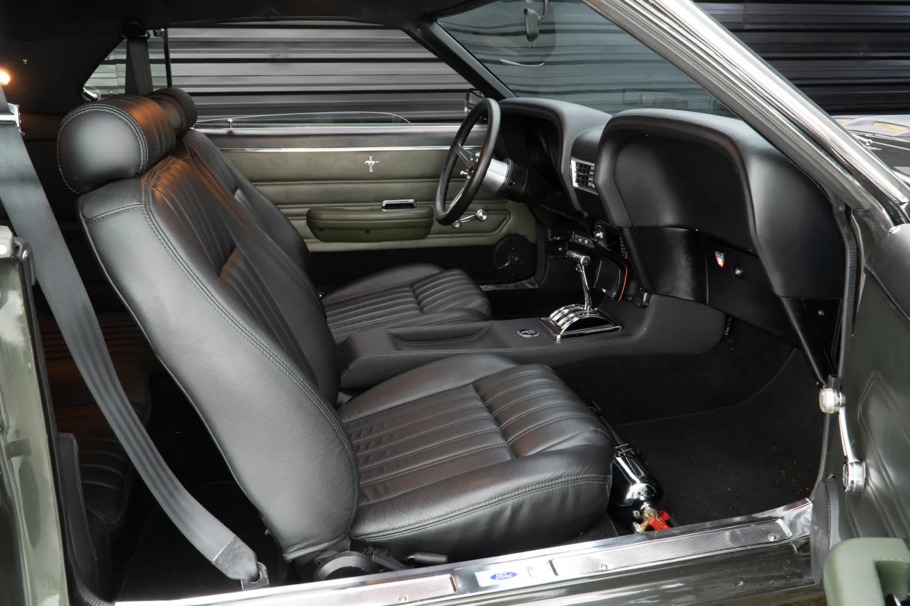
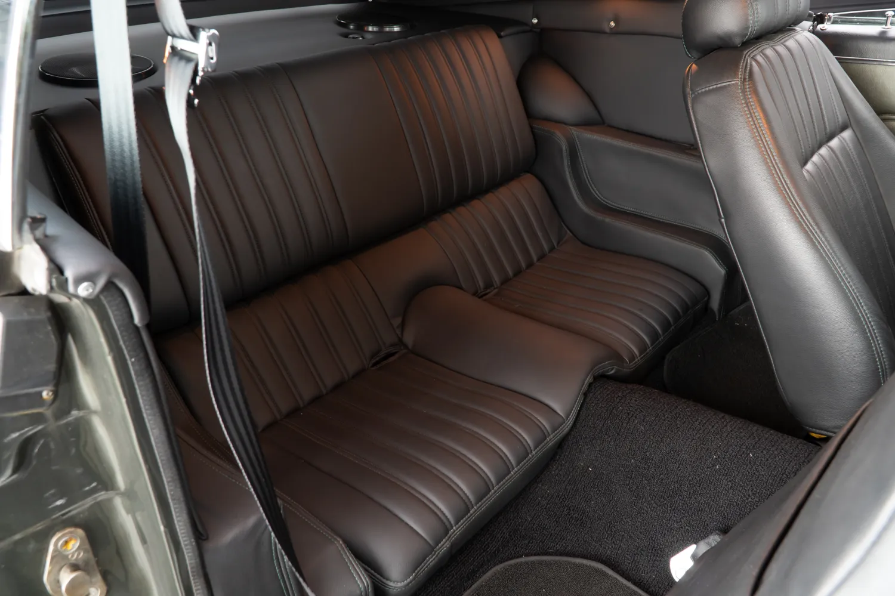

Mustang 1969
O Mustang Fastback 1969 é uma das joias mais icônicas da era de ouro dos muscle cars americanos, um símbolo de potência e estilo que transcende décadas. Em 1969, a Ford lançou uma versão redesenhada de seu já popular Mustang, e o Fastback, em particular, se destacou com suas linhas agressivas e aerodinâmicas. O design apresentava um perfil elegante com uma traseira inclinada que sugeria velocidade mesmo em repouso. O capô longo e musculoso abrigava uma gama de motores robustos, com opções que iam desde o confiável V6 de 200 cavalos até o temível V8 Boss 429, que oferecia um desempenho impressionante e som de ronco inconfundível. As entradas de ar e a grade dianteira redesenhada contribuíam para a estética intimidante do carro, enquanto os faróis duplos e as lanternas traseiras triplas eram marcas registradas do estilo Mustang. O interior do Fastback 1969 não ficava atrás em termos de luxo e funcionalidade, com um painel de instrumentos voltado para o motorista e bancos esportivos que ofereciam conforto e suporte em alta velocidade. Além de seu visual impactante, o Mustang Fastback 1969 também foi um sucesso em competições de corrida, reforçando sua reputação como um verdadeiro performer na pista. O modelo ficou famoso não apenas por sua presença nas ruas, mas também por suas aparições em filmes e cultura pop, sendo o carro escolhido em filmes icônicos como "Bullitt", onde Steve McQueen pilotava um Mustang Fastback 1968, imortalizando o veículo na memória coletiva como o carro definitivo de ação. A durabilidade e a capacidade de modificação do Mustang Fastback 1969 o tornaram um favorito entre os entusiastas de carros clássicos, e até hoje, muitos colecionadores e restauradores se dedicam a manter esses veículos em condições impecáveis, mantendo viva a lenda que começou há mais de meio século. A popularidade do Mustang nunca diminuiu, e o modelo Fastback de 1969 continua a ser um dos mais procurados por sua combinação perfeita de estilo atemporal e desempenho bruto. Ao longo dos anos, o Mustang se transformou e evoluiu, mas o espírito do Fastback 1969 permanece como um ponto alto na história automotiva americana. O Mustang Fastback 1969 não é apenas um carro; é uma declaração de liberdade, potência e inovação que ressoa com cada ronco do motor e cada curva tomada com precisão. É o epítome do que significa ser um muscle car: uma máquina que desafia os limites e personifica o espírito indomável de uma era marcada por mudanças rápidas e progressos audaciosos. Quando se pensa em carros que definem a década de 1960, o Mustang Fastback 1969 surge imediatamente como uma referência, um tributo ao design e à engenharia que capturou a essência da estrada aberta e a paixão pela velocidade. Conduzir um Mustang Fastback 1969 é mais do que simplesmente dirigir um carro; é vivenciar uma peça de história, sentir o poder debaixo do capô e a herança de um legado que continua a inspirar novas gerações de amantes de carros.


 




Para adquirir o veiculo, nos contate no whatsapp (11) 9 5681-9861